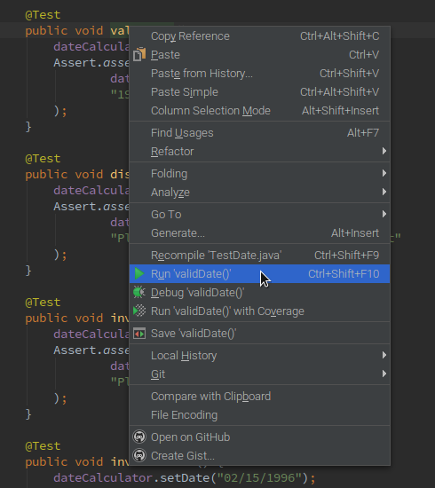
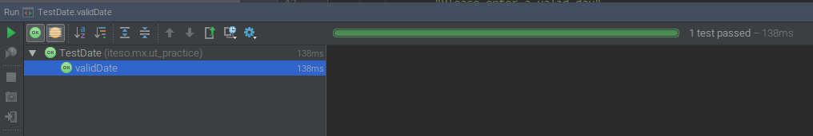
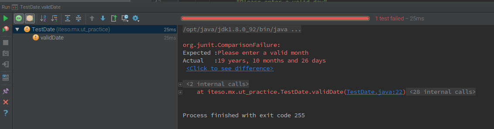

Running Unit Tests
1. Preparar la clase
Hay que crear el método de configuración para la clase de prueba.
El tag @Before indica que ese método debe realizarse previo a las pruebas; en este caso, para realizar la configuración.
2. Crear el caso de prueba
Para indicar que es un test case, hay que incluir el tag @Test.
El método Assert.assertEquals() comapra el resultado obtenido por el método a probar contra el resultado esperado para ese caso.
3. Correr el Unit Test
Para correr un test individual, hay que hacer click derecho sobre el nombre del método, y luego, seleccionar 'Run nombreMetodo()'.

3.1 Correr todos los Unit Tests
Para correr todos los tests, hay que hacer el proceso anterior, pero haciendo click derecho sobre el nombre de la clase de prueba.
4. Verificar los resultados
Una vez que el IDE hizo el build y corrió la(s) prueba(s), hay que revisar que el resultado sea el esperado.

En caso de que hubiera algún error al realizar la prueba, el IDE avisará cuál fue el error.

¡Listo! Corriste tu primera Unit test.
¿Sigues con dudas? Te presto mi código fuente.
Nota: El contenido presentado es propiedad de su autor y queda estrictamente prohibido su reproducción parcial o total. El contenido compartido es únicamente con propósitos educativos.